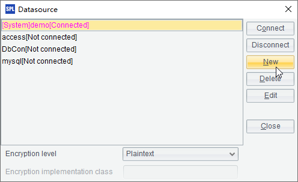

12.5.4 Common properties of chart elements
There are some common properties for the most used chart elements, like the visibility and transparency, about which you’ve had some basic understanding through scatter chart plotting. Edit A6’s plotting parameters to modify the plotting algorithm for the scatter chart:

Change the Transparency value for the chart element to 0.5 and check Shadow. The plotting result is this:

You can see that the modification of Transparency has faded the dot’s colors and made them more transparent. Checking Shadow creates slight shadows to the lower right of the dot. Besides, setting Visible as false will hide the chart elements. The Allow text overlapping property is similar to that of the axis labels mentioned in Charts:The Axis Element. During the plotting of a set of chart elements, if this property is set as false, an element that overlaps some part of an existing one will not be plotted.